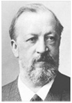

가솔린을 연료로 하는 내연기관이다. 작동방식에 따라 2회전, 4행정으로 구성된 4행정 기관과 1회전마다 폭발하는 기관인 2행정 기관으로 나뉜다. 보통 수랭식을 많이 사용하며, 다른 엔진과 달리 기화기라는 장치가 있어 가솔린과 공기를 적당히 혼합하여 실린더로 내보낸다.

독일의 기계 기술자 (1831~1891). 처음에는 쾰른의 신분이 낮은 상인이었으나,1861년에 가솔린 기관의 연구를 시작하여, 1877년에 4사이클식의 오토 기관에대한 특허를 받았다. 오토 기관은 당시 산업의원동력이었던 증기 기관 대신에원동기로서 진출하기 시작하여 현대의 가솔린 기관의 원형이 되었다.
독일의 기계 기술자 (1831~1891). 처음에는 쾰른의 신분이 낮은 상인이었으나,1861년에 가솔린 기관의 연구를 시작하여, 1877년에 4사이클식의 오토 기관에대한 특허를 받았다. 오토 기관은 당시 산업의원동력이었던 증기 기관 대신에원동기로서 진출하기 시작하여 현대의 가솔린 기관의 원형이 되었다.